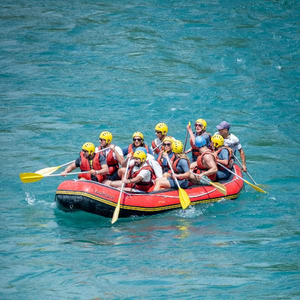
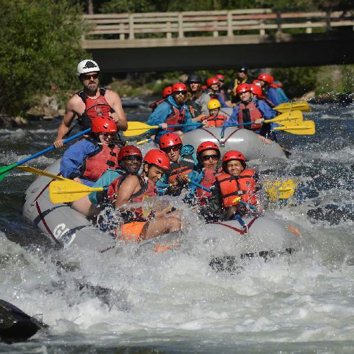
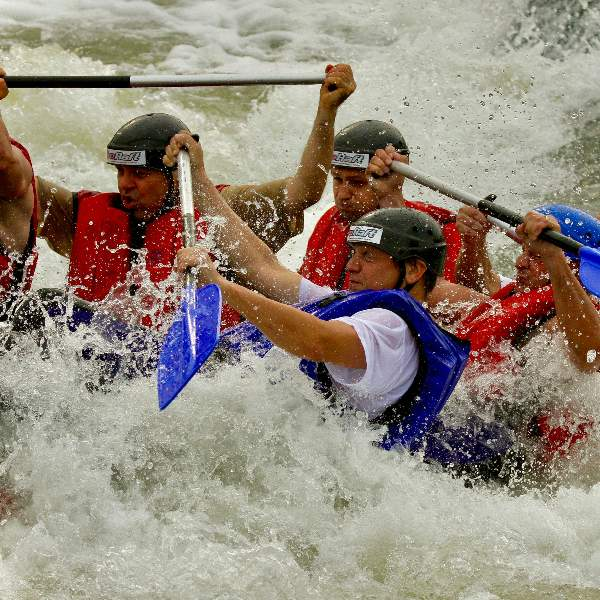

Trips we offer



Want to book an unforgettable adventure?
Available Trips:
| Trip Name | Duration | Difficulty | Price | Includes |
|---|---|---|---|---|
| Sunset River Ride | 2.5 Hours | Beginner | R600 | Light Snacks, Trained Guide |
| Calm Waters Ride | 3-4 Hours | Beginner | R500 | Life Jackets, Trained Guide |
| Rapid Rush Adventure | Full Day | Intermediate | R1500 | Lunch, Gear, Trained Guide |
| Team Building Expedition | Full Day | Intermediate | R1200 | Activities, Trained Instructor |
| Extreme Rapids Expedition | Full Day | Advanced | R1800 | Lunch, Gear, Safety Crew |